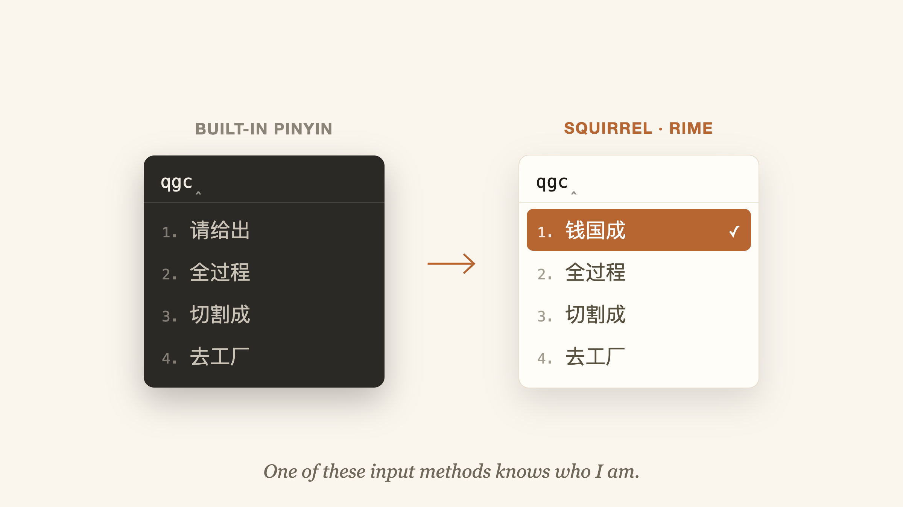

Tools
My Mac Couldn’t Type My Name
Apple’s built-in Chinese input never learns your words. Squirrel (Rime) remembers your name, your phrases, even your emoji — and an agent can configure all of it for you.

I type my Chinese name, 钱国成, every day — in emails, in chat apps, in forms. And every day, Apple’s built-in Pinyin input offers me someone else’s words first.
The pain: Apple’s Pinyin has no memory
The built-in input method does not really learn. Words you type dozens of times a day stay buried behind generic phrases; there is no practical way to pin your own frequent words; and the moment a name or term is slightly uncommon, you are back to hunting through candidate pages. For a system that is otherwise so polished, the Chinese support is simply not good.
Your own name is the clearest example: it is the single string you type most often, and the system treats it like a stranger every time.
The fix: Squirrel (Rime)
Squirrel (鼠鬚管) is the macOS build of RIME, a free and open-source input method engine. Its defining feature is exactly the one Apple is missing: it remembers — and it does so by default, out of the box, with zero configuration. Pick a word once and it rises to the top; keep using it and it stays there.


It installs like any other input source and sits quietly in the menu bar. Squirrel has become my daily driver for all Chinese typing.

Configure it your way
Rime is famously configurable: everything is a plain YAML file under ~/Library/Rime — candidate window theme, fuzzy pinyin rules, custom dictionaries, key bindings. One tweak I love: emoji and symbols appear right in the candidate list. Type “jiu” and 🍷 🥃 🍺 line up next to 酒; flags, arrows, and math symbols work the same way. No more hunting through the emoji picker.

Another tweak I cannot live without: inline English. In Chinese mode, just type an English word and the candidates are the word itself and its completions — “squirrel” goes straight in, no Ctrl-Space dance.

How to set it up: just ask your agent
Rime’s flexibility used to come with a legendary learning curve — schemas, patch files, deployment commands, wiki pages. In 2026 you can skip all of it: tell your coding agent to install and configure Squirrel, then state your needs in plain language. “Add emoji to the candidates.” “Let me type English inline.” “Match the candidate window to dark mode.” The agent installs the package, writes the YAML patches, redeploys the config, and you just keep typing.
You no longer read the manual. You state the need — the agent reads the manual.
My Rime config is open source: guochengqian/gordon-rime-config — memory, emoji, and inline English are already wired up. Point your agent at it and tweak from there.
Same loop as this blog itself: describe what you want, and the tooling assembles itself underneath you.
Enjoyed this post? Send it to your email to read later.